Adding Survey Data into OSM Using JOSM
Objectives:
- To be able to install plugin Utilsplugin2
- To be able to merge all survey data
- To be able to save .osm file using JOSM
- To be able to download OSM data
- To be able to add satellite imagery layer on JOSM
- To be able to add and edit OSM data using JOSM
- To be able to upload changes into OSM
- To be able to view changes of OSM data in OSM website
Adding or mapping new objects in OSM is one way to enrich OSM data. Mapped object’s information will be very limited when you add OSM data based on satellite imagery only. Field survey can be conducted to solve this problem. Field survey can help you add more information to the mapped object. You can learn more about survey toolkit in the Field Data Collection Methodology module. You need an OSM data editor to do the OSM mapping. There are a lot of OSM data editor available, but in this module the OSM data editor used is JOSM. JOSM has a lot of useful tools and plugins, making OSM mapping a lot easier.
I. Installing plugin Utilsplugin2
Before adding or editing OSM data using JOSM, install plugin you’ll be using first. JOSM has a plugin called utilsplugin2 whose one of the functions is makes copying preset/tag easier. To use this plugin, you have to install the plugin first since it is not installed by default. These are the steps to install plugin utilsplugin2:
- Open JOSM
- Click menu Edit → Preferences
- Select menu Plugins to install new plugin. If you haven’t downloaded available plugins, click Download List first to download it. Make sure that you are connected to the internet.
- After downloading plugins, search the utlisplugin2 by typing it in the search box. After you found it, give a check on the checkbox next to utilsplugin2.

- Click OK and wait until the installation process is finished. If the plugin has successfully installed, there will be More tools menu on your JOSM.
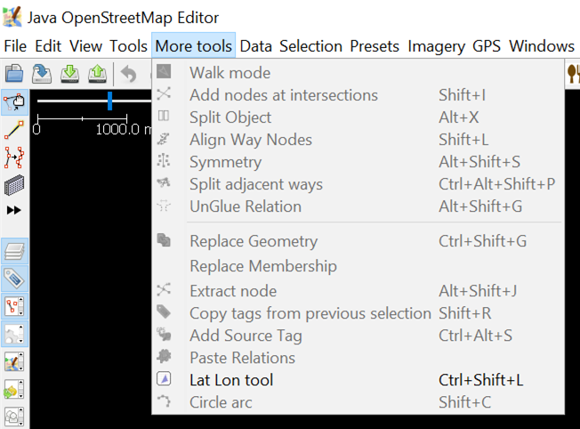
Note: Sometimes JOSM ask you to Restart JOSM after installing new plugin to apply newly installed plugins. However, not all newly installed plugin needs JOSM restarting to be used after installation process finished.
II. Merging All Survey Data
If you have finished conducting survey using field data collection toolkit such as ODK Collect and OpenMapKit, you can use the survey data as the reference to add object’s information when mapping it in OSM. Survey data file format from ODK Collect and OpenMapKit is .osm. The amount of .osm file from ODK Collect and OpenMapKit will be the same amount as the surveyed objects since information of one object will be saved in one .osm file. Merge all .osm file to make it easier to use the survey data as mapping reference by following these steps:
- Go to File Explorer to where you save .osm file from ODK Collect and OMK.

- Search all .osm file by typing “osm” in the Search box. Select all .osm file from the search results.

- Drag all selected .osm file to JOSM.

- Select all those .osm layer by selecting the uppermost .osm layer, then pressing Shift and then selecting the lowermost .osm layer
- Right click on one of the .osm layer, then click Merge. Select target layer Windows will appear, you do not have to change the target layer, click Merge.

- Save the merged layer and change the name by right-clicking on the merged layer, select Save As, change the layer name and then click Save.

- JOSM provides a plugin named to-do to help you mark the mapped or unmapped object from the merged survey data layer. You can refer to Using to-do list on JOSM module to learn how to install and how to use to-do plugin in details. If you have already installed to-do plugin and activated Todo list Windows, select all objects nodes in the merged layer using Select object icon, then click Add on the Todo list Windows.
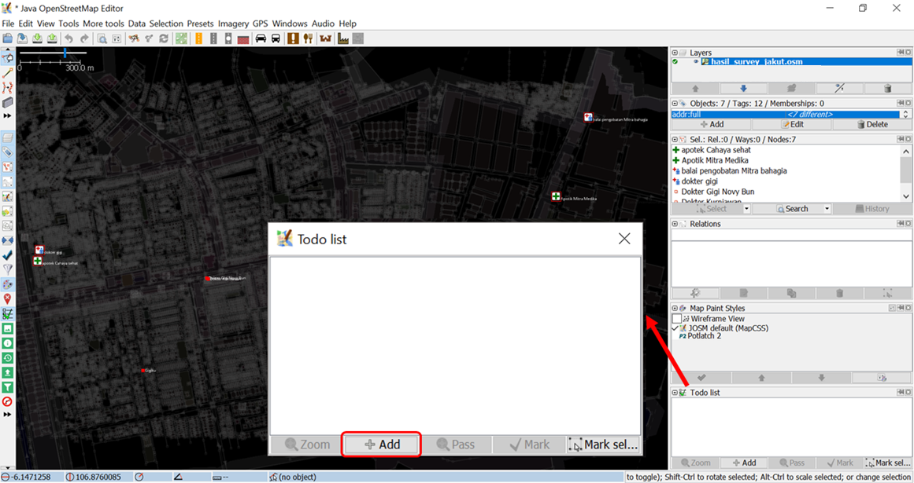
III. Downloading OSM Data
After successfully merging all survey data, you need to download existing OSM data. Downloading OSM data aims to discover which objects already mapped and which objects have not already mapped on OSM. These are the steps to download OSM data using JOSM:
- Click menu File → Download Data
- Download Windows will appear. It will show you tab Slippy Map by default.

-
If the map is not displaying your mapping area, slide the map by right clicking and hold your mouse and then drag the map to your mapping area. Draw a box at your mapping area by left clicking and hold your mouse and then move your mouse until a pink box cover the entire mapping area. Then click Download.
-
If it is quite hard to find your mapping area by sliding the map, you can click tab Areas around places and type the name of your mapping area in the Enter a place name to search for box then click Search. The search result will show you names of your mapping area. Click on one of the names then go back to tab Slippy Map. The map on the tab Slippy Map will be directed to your mapping area. Draw a box covering your entire area of mapping, then click Download.
Note: Do mind the amount of existing OSM data in your mapping area. If there is already a lot of existing data, you should download it part by part since JOSM can not download an enormous amount of data at once.

- After finished downloading OSM data in your mapping area, there will be a new layer in the Layer Windows that will also be your editing layer to add or edit OSM data. Make sure that you only add or edit data in the clear area, not in the shaded area. The shaded area is not your downloaded area. And make sure your entire survey area is already downloaded. After downloading OSM data, your JOSM will look like this:
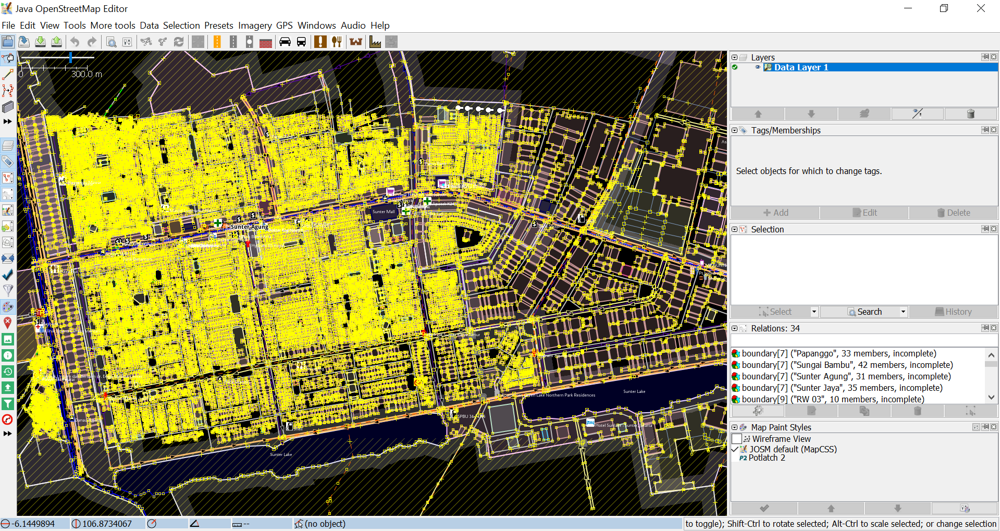
- If you already downloaded OSM data in all your area, merge your downloaded OSM data layer with your survey data layer. Select those two layers then right click, select Merge. Save on your survey data layer. Then click Merge.

IV. Adding Satellite Imagery
- Add satellite imagery as another reference for mapping by clicking menu Imagery → choose one of the available imagery you want to use, such as DigitalGlobe Premium Imagery. After successfully adding satellite imagery, it is time to add OSM data. Your JOSM will look like this:
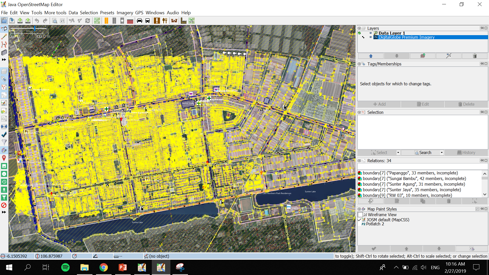
- You can adjust the display of the satellite imagery. Select the satellite imagery layer, then click icon Change visibility of selected layer and adjust its display by sliding the blue button left or right.

- If you use DigitalGlobe Premium Imagery as your reference, sometimes it has two versions of display when you zoom it in or zoom it out. Usually there is only one version of display aligned with the existing OSM data. Inactivate Auto Zoom feature so that the satellite imagery display won’t change when you zoom it in or zoom it out. To inactivate Auto Zoom feature, right click on the Satellite Imagery display → click Auto zoom so that the checkmark next to Auto zoom disappear.
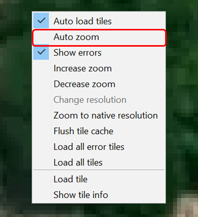
V. Editing OSM Data Using JOSM
Now you are ready to add or to edit OSM data using JOSM. You can draw new objects or you can edit the existing objects using the tools mentioned in Using JOSM module. Here are the steps on how to add or edit OSM data using survey data, downloaded OSM data and satellite imagery that you already added before on JOSM:
- After successfully following the steps mentioned in the previous sections, there will be two layers on your JOSM: satellite imagery layer (in the picture below, the layer meant is DigitalGlobe Premium Imagery layer) and merged survey data with downloaded OSM data layer (in the picture below, the layer meant is hasil_survey_jakut.osm layer). It will look like this:
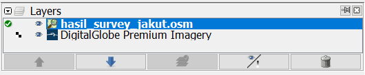
- You can use Filter feature on JOSM so that you don’t accidentally make changes on other objects such as administrative boundaries. Administrative boundaries in OSM is a delicate objects, so if there are already administrative boundaries mapped on your mapping area then it is better to utilize the Filter feature. To use this Filter feature, activate the Filter Windows by clicking menu Windows → Filter. There will be Filter Windows in the right panel. Click Add in the Filter Windows, type boundary=administrative in the Filter string box and click Submit Filter. New filter will appear for the administrative boundaries. To turn off the filter, simply uncheck the checkmark on the left of the filter. You can find out more about Filter feature on JOSM in the Using Filter on JOSM module.
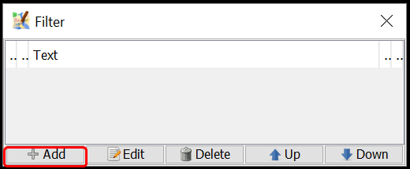


- Start mapping by zooming in to an object, select one object in the Todo list Windows and then click Zoom. After selecting and zooming in one object, you can copy the tag from the selected object to the downloaded OSM objects. Select the downloaded OSM object that aligns with the selected survey object, then click menu More tools → Copy tags from previous selection or press Shift + R on your keyboard. Make sure you selected the aligned survey object right before copying its tags to downloaded OSM object. Also make sure that the copied tags are consistent with OSM mapping guidelines and suitable for the object type. For example, in the picture below, a clinic located in a shophouse complex, mapped as a point and only have tags suitable for point object. While the building related tags added to the shophouse building where the clinic is located. When you finish copying tags for one object, click Mark to identify that it is just already mapped on OSM. Repeat until all of the objects mapped on OSM.
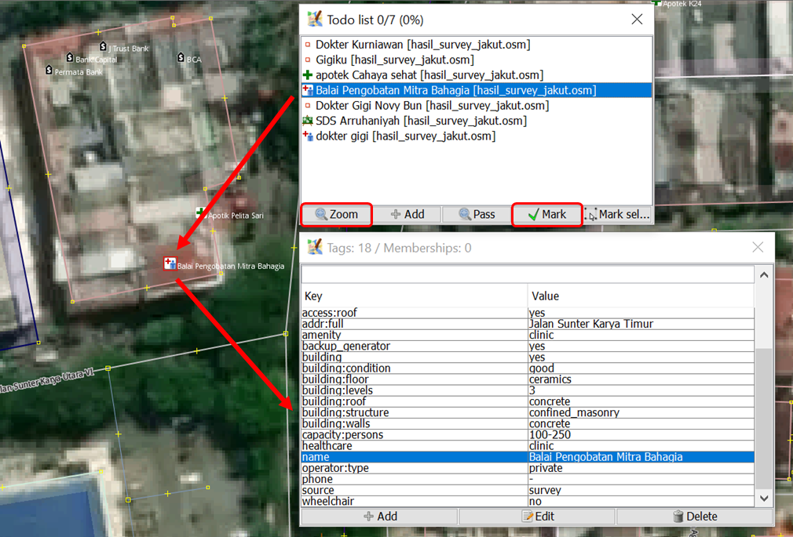


- Example given above is for point object. When you find an object that is supposed to map as a polygon, such as school complex which has more than one building inside, how to map it on OSM? Select the school object in the Todo list Windows and then click Zoom. Select the point object on the map. Copy the tag to the building polygon aligned with the point object by selecting the building polygon and then clicking menu More tools → Copy tags from previous selection or pressing Shift + R on keyboard. After copying the tags, delete tags that are not related to building and left only building related tags. Draw a polygon covering all school area using Draw nodes, then copy tags that are suitable for school area (tags that you deleted before in the building polygon) like amenity, name and addr:full. After that, delete the school point from the survey data since it has just been mapped as a school area polygon.
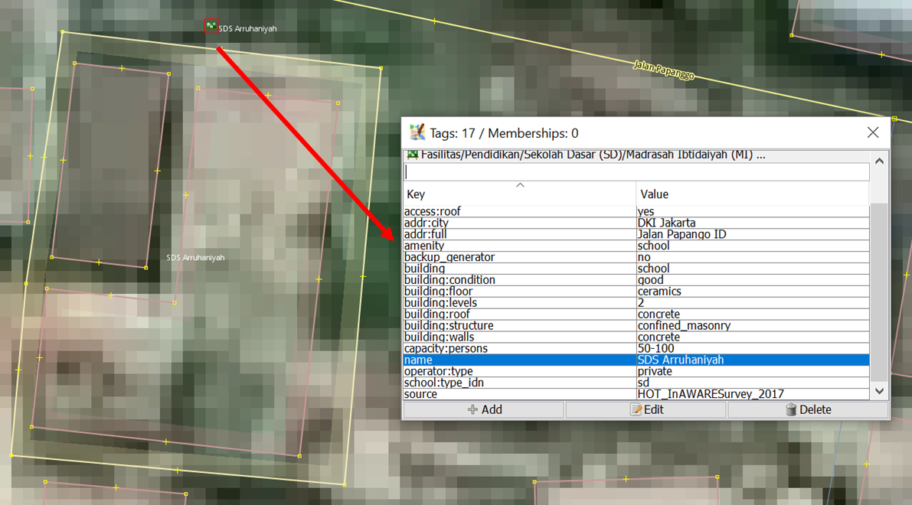
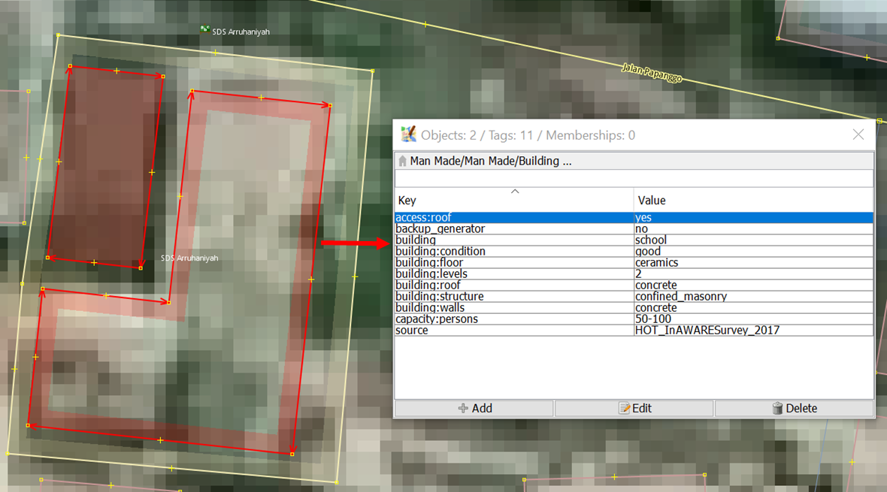
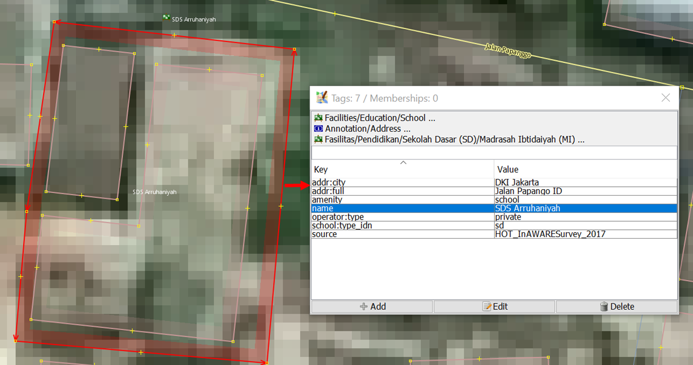
VI. Saving Changes
- If you have already done mapping using JOSM, save changes to OSM server because the newly added objects are saved only in your computer. To save the changes you’ve made, click menu File → Upload Data.
- If you encounter warning/error after clicking Upload Data, it is better to fix warning/error first. You can find out more about fixing warning/error and common warning/errors found in Survey Data Validation Using JOSM module. However, if you don't have the time to learn how to fix warning/error, you can just go ahead and click Continue Upload. Upload Windows will appear.
- If there is no warning/error, Upload Windows will appear. On the Upload Windows, type a brief comment for the changes you’ve done in the comment box and specify the source(s) in the source box. Type the name of the satellite imagery and survey in the source box. If you want other contributors to review your edits, give a checkmark next to I would like someone to review my edits. Then click Upload Changes.
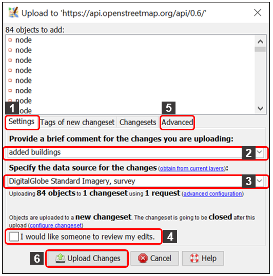
Note: You need to periodically upload your edits when mapping so that there won't be a hefty amount of edits to upload. The more edits you want to upload, the more time it takes to upload. If you already mapped a lot of edits and haven't done any upload, you can upload it by chunk. You can do it by clicking tab Advanced and select Upload data in chunks of objects in the Upload Windows. Type the Chunk size with how many changes you want to upload per chunk, such as 500. This can be done to avoid incomplete upload, especially when your internet connection is unstable that resulted in object duplication.
VII. Saving .osm File
- You can also save your editing layer by right clicking on your editing layer and click Save. Save OSM file WIndows shown below will appear. Type the name of your file, then click Save. Your file will be saved in .osm format.

Note: If you haven't finished mapping your area and you want to continue mapping it later, you can save your work as .osm file then you can continue mapping it later. You can open your saved .osm file by clicking menu File → Open, choose the file you want to open and click Open. After opening it, update the OSM data first by clicking menu File → Update Data and you can go ahead to continue mapping.
VIII. Viewing Changes in the Map
- You can view your changes by checking it on OSM website and directing it to your mapping area. Keep in mind, new changes can be viewed a while after uploading it to OSM server.
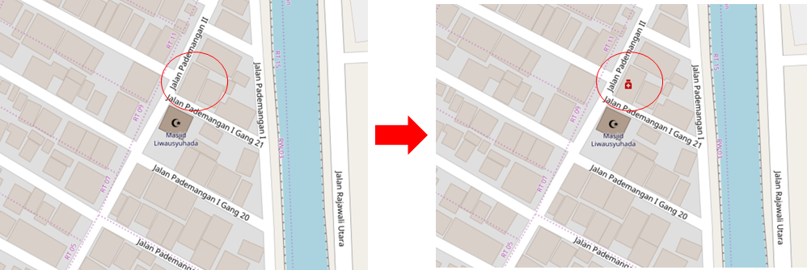
SUMMARY
If you can apply and follow through to all of the steps mentioned in this module, then you are able to go through OSM mapping process using JOSM successfully. You are able to do OSM mapping process, such as downloading OSM data, adding satellite image, editing OSM data, uploading changes, saving OSM data as .osm file and viewing changes. You can upload your changes periodically, such as by region or by village. If you already have finished conducting survey in one region or in one village, you can upload it directly to OSM. This shall be done so that your survey data is not piled up and others can perform data validation for your edits.